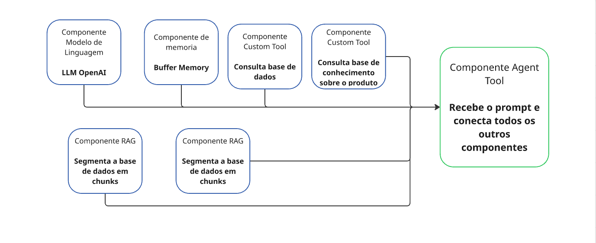
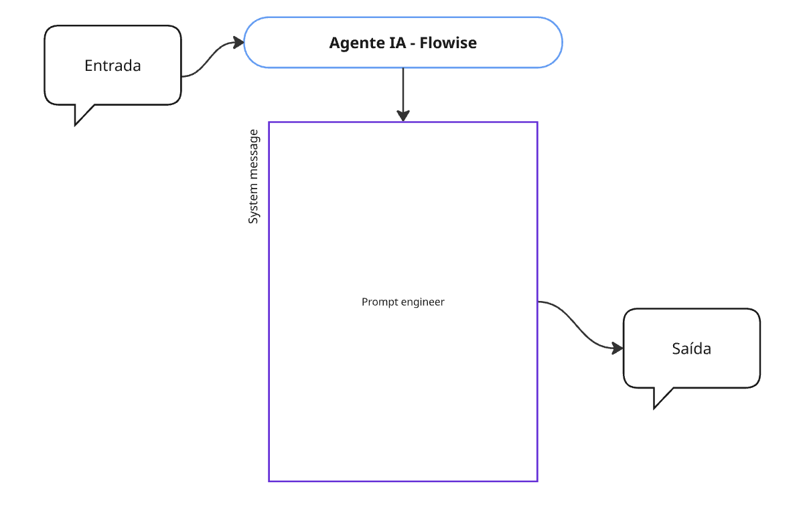
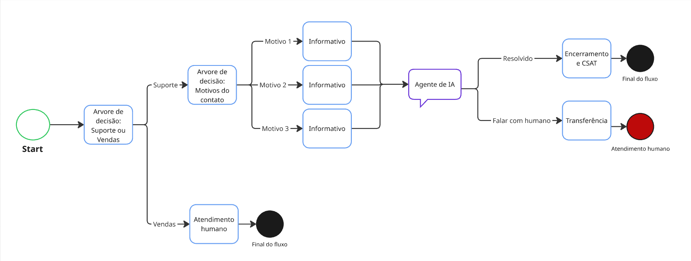
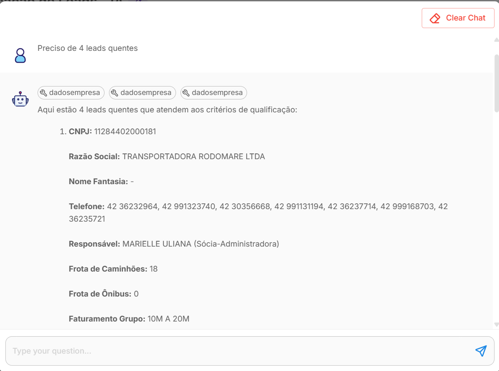
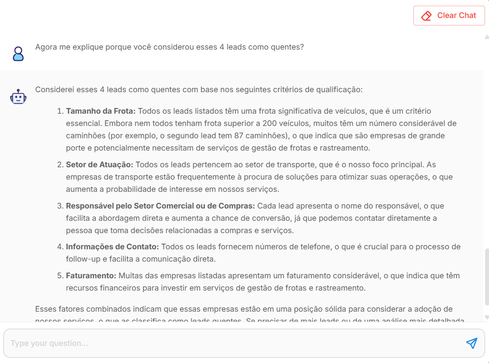

🚀 Desvendando o Poder da IA: Uma Jornada de Inovação em Agentes Inteligentes 🚀
Seja bem-vindo(a) à minha apresentação de dois agentes de IA que não apenas demonstram minhas capacidades técnicas em engenharia de IA com ferramentas open-source, mas também minhas habilidades estratégicas no design de soluções robustas e omnichannel.
Estes projetos são um reflexo da minha paixão por transformar desafios em soluções inteligentes e eficientes.
O Agente 1, nosso **Qualificador de Leads**, foi desenvolvido para otimizar o processo de prospecção. Seu principal objetivo é identificar e categorizar leads "quentes" através da consulta de uma base de dados interna, aplicando critérios pré-estabelecidos de forma automatizada e eficiente.

Como Foi Construído
Este agente foi arquitetado com a versatilidade do **Flowise**, uma ferramenta open-source que me permitiu construir um fluxo de IA robusto e adaptável. Ele está integrado a uma base de dados vetorizada no **Amazon S3**, contendo informações detalhadas sobre CNPJs de empresas cujo negócio é relevante para o serviço e produto ofertado.
Componentes-chave da construção:
Modelo de Linguagem (LLM OpenAI): Configurado com uma **temperatura de 0.7-0.8**, garantindo que as saídas sejam concretas e baseadas em dados, sem divagações criativas.
Custom Tools: Permitem que o modelo de linguagem tenha acesso às informações disponíveis na base de dados de forma controlada e segura.
Vetorização e RAG (Retrieval Augmented Generation): Os dados foram segmentados em "chunks", facilitando a leitura e entendimento pelo modelo de linguagem.
Memória Conversacional: O modelo de linguagem utiliza informações de conversas anteriores para gerar a resposta.
Agent Tool: Coração do agente, onde o prompt principal foi cuidadosamente elaborado com uma combinação de técnicas avançadas: **persona**, **few-shot learning** e **Chain-of-Thought (CoT)**. Guardrails também foram incorporados ao prompt para proteção de dados e proteção da saída.
Este agente foi projetado para **uso interno** pelo setor Comercial e está hospedado em uma página HTML estática, garantindo acessibilidade e praticidade.
Resultados Obtidos
A implementação do Agente 1 resultou em uma **eficiência operacional** sem precedentes. Anteriormente, uma pessoa era dedicada exclusivamente à qualificação de leads de uma base com mais de 5.000 linhas. Agora, este processo é totalmente automatizado, liberando recursos humanos para tarefas mais estratégicas.
✍️ Prompts e Tools no Flowise: A Abordagem Unificada ✍️
No Flowise, a flexibilidade permite consolidar todas as instruções e definições de 'tools' em um único **Prompt de Sistema (System Message)**. Isso exige clareza e organização para guiar o modelo de forma eficaz.
Estrutura Visual do Prompt no Flowise

Exemplo de Prompt (System Message) para o Agente de Leads no Flowise:
Você é um qualificador de leads especialista da [Nome da Empresa], educado, objetivo e focado em identificar oportunidades de negócio.
Sua tarefa é analisar os dados de CNPJ fornecidos e determinar se a empresa é um lead "quente" ou "frio" com base nos critérios abaixo.
[INSTRUÇÕES DA PERSONA]
- Seja direto e profissional.
- Use linguagem formal e clara.
- Se não conseguir qualificar, informe isso claramente e por que.
[CRITÉRIOS DE QUALIFICAÇÃO DE LEAD "QUENTE"]
- Faturamento anual acima de R$X milhões.
- Setor de atuação: [Setores específicos, ex: Tecnologia, Manufatura, Varejo Online].
- Número de funcionários: acima de Y.
- Presença digital: Site ativo e perfil em redes sociais (LinkedIn).
[FERRAMENTA DISPONÍVEL]
- Nome: 'consultar_cnpj_database'
- Descrição: Consulta uma base de dados interna de CNPJs para obter informações detalhadas da empresa.
- Parâmetros:
- 'cnpj': O número do CNPJ (string).
- Retorno:
- 'dados_empresa': Um objeto JSON com 'faturamento_anual', 'setor', 'num_funcionarios', 'url_site', 'linkedin_url'.
[EXEMPLO FEW-SHOT]
Usuário: Qualifique o CNPJ 12.345.678/0001-90.
Modelo:
1. Chamo a ferramenta 'consultar_cnpj_database' com o CNPJ 12.345.678/0001-90.
2. Ferramenta retorna: {"faturamento_anual": 25000000, "setor": "Tecnologia", "num_funcionarios": 120, "url_site": "site.com.br", "linkedin_url": "linkedin.com/empresa"}
3. Analiso os critérios: faturamento > R$X milhões (OK), setor "Tecnologia" (OK), num_funcionarios > Y (OK), presença digital (OK).
4. O lead 12.345.678/0001-90 é um **lead QUENTE**.
[GUARDRAILS]
- NUNCA compartilhe dados confidenciais ou detalhes internos da base de dados.
- Se o CNPJ for inválido ou não encontrado, responda que a consulta não pôde ser realizada.
- Se o usuário tentar induzir a qualificação sem um CNPJ válido, solicite o CNPJ.
Este prompt encapsula a persona, as regras de negócio, a instrução para uso da 'tool', um exemplo de `few-shot learning` e os `guardrails` de segurança, tudo em um único bloco, característico da configuração do Flowise.
Agente 2: O Agente de Suporte Omnichannel 🤝
O Problema que Resolvemos
O Agente 2 é o nosso Agente de Suporte, com o objetivo principal de fornecer atendimento e resolver as principais dúvidas dos clientes de forma autônoma. Sua meta é **reduzir significativamente o volume de atendimentos direcionados a humanos**, permitindo que a equipe de suporte se concentre em questões mais complexas e de maior valor.

Como Foi Construído
Este agente foi desenvolvido na Intercom, uma ferramenta robusta de omnichannel e low-code, e está integrado ao fluxo principal de chatbot do **webchat e WhatsApp** da empresa. O fluxo de atendimento foi cuidadosamente desenhado com uma **árvore de decisão** que precede a interação com a IA, servindo como uma etapa de triagem antes de um possível direcionamento para o humano.
Destaques da construção na Intercom:
Integrações Poderosas: Conexões com o sistema interno e o CRM permitem que o usuário acesse informações como histórico de reservas, cadastro e até mesmo realize alterações e cancelamentos de reservas diretamente pelo chat.
Chamadas de APIs Rest Post: Componentes configurados com endpoints de consulta e de alterações. Nesses componentes, foram configurados os retornos que deveriam ser apresentados ao usuário, convertendo códigos em texto.
LLM Fin (Nativo da Intercom): O modelo de linguagem nativo da ferramenta.
Componentes Condicionais: Para direcionar fluxos diferentes dependendo do retorno das APIs.
Configuração de Prompts Avançada: Diversos campos para prompts com limite de 100 prompts de diferentes técnicas que têm como objetivo definir a persona e a comunicação do agente, solicitar contexto ao usuário quando a entrada não é suficientemente explicativa, e prompts para direcionamento e ações como, por exemplo, direcionar o usuário ao atendimento humano quando identificadas palavras de alerta como "processo judicial", "reclamação", "falar com humano", entre outras.
Base de Conhecimento: Esse modelo utiliza uma base de conhecimento interna, construída e gerenciada com informações sobre processos e informações, para gerar as saídas (respostas).
Resultados Obtidos
Os resultados do Agente 2 são impressionantes e refletem diretamente no negócio:
**Aumento da Retenção Digital:** Saltamos de **10% para 40%** de todo o atendimento via chat sendo resolvido digitalmente.
**Redução da Métrica de Contact Center:** Atingimos a meta proposta para o último quarter de 2025, otimizando a relação entre vendas e atendimentos de suporte.
**Aumento da Satisfação do Cliente (CSAT):** O índice de satisfação disparou de **50 para 86**, demonstrando a eficácia e a qualidade do atendimento automatizado.
**Redução de Custos Operacionais:** A eficiência do agente resultou na redução da necessidade de contratação de **5 novos atendentes**, representando uma economia significativa.
✍️ Prompts e Tools na Intercom: A Abordagem Modular ✍️
A Intercom oferece uma estrutura modular para a engenharia de prompts, separando as diretrizes de comportamento (`Guidance`) das instruções de tarefas e ferramentas (`Fin Tasks`). Isso facilita a organização e a escalabilidade de agentes complexos.
Estrutura Visual dos Prompts na Intercom
Exemplos de Prompts e Tools para o Agente de Suporte na Intercom:
1. Prompt de Comunicação (Campo "Guidance" / "Persona"):
Você é o assistente virtual da [Nome da Empresa], um chatbot amigável e prestativo.
Seu principal objetivo é resolver as dúvidas dos clientes de forma autônoma, fornecendo informações precisas e direcionando para as ações de autosserviço apropriadas.
Mantenha um tom de voz empático e objetivo.
2. Prompt de Roteamento/Guarda-chuva (Campo "Guidance" / "Roteamento"):
Se o usuário expressar frustração, pedir para falar com um atendente, ou usar termos como "reclamação", "processo judicial", "procon", "defeito grave", transfira imediatamente para um agente humano da fila de Suporte Prioritário.
Quando a entrada for ambígua ou muito curta, peça mais detalhes ao usuário antes de tentar uma resposta ou ação.
3. Prompt de Tarefa / Tool (Campo "Fin Task" / "Buscar Histórico de Compras"):
Nome da Fin Task: BuscarHistoricoCompras
Descrição: Aciona uma API interna para consultar o histórico de compras de um cliente pelo CPF.
Instrução para o Agente:
1. Solicite o CPF do cliente.
2. Utilize a função 'api_call_get_historico_compras(cpf_do_cliente)' para obter os dados.
3. Se a API retornar sucesso, apresente os últimos 3 itens comprados, a data da compra e o valor total.
4. Se a API retornar erro ou não encontrar o CPF, informe ao usuário que não foi possível localizar o histórico e sugira que ele verifique o CPF ou entre em contato com o suporte.
A abordagem da Intercom permite uma gestão mais granular dos prompts, onde cada tipo de instrução (comunicação, roteamento, tarefa) reside em um campo específico, facilitando a manutenção e o escalonamento do agente.
🎨 Evidências Visuais e Conversas Reais (Agente 1) 🖼️
Explore as interfaces do Agente 1 em ação e veja exemplos de conversas que demonstram sua eficácia.

Agente 1: Qualificação de Leads. Exemplo de como o Agente 1 consulta a base de dados e retorna leads "quentes" com base nos critérios definidos.

Agente 1: Justificativa da Qualificação. O agente também é capaz de explicar o porquê de um lead ser considerado qualificado, agregando valor à análise.
**Nota:** Por questões de confidencialidade e acordos de sigilo, algumas evidências visuais referentes ao **Agente 2 (Suporte Omnichannel)** foram omitidas, uma vez que estavam em ambiente de produção da empresa anterior.